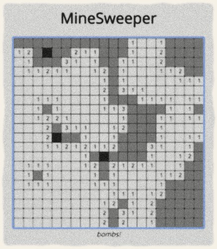
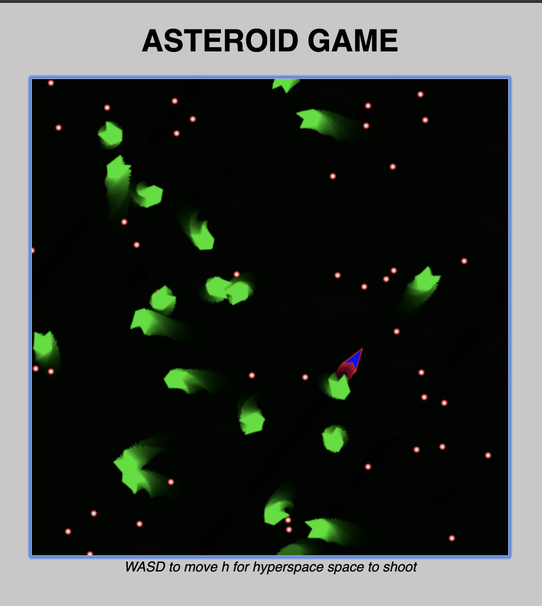
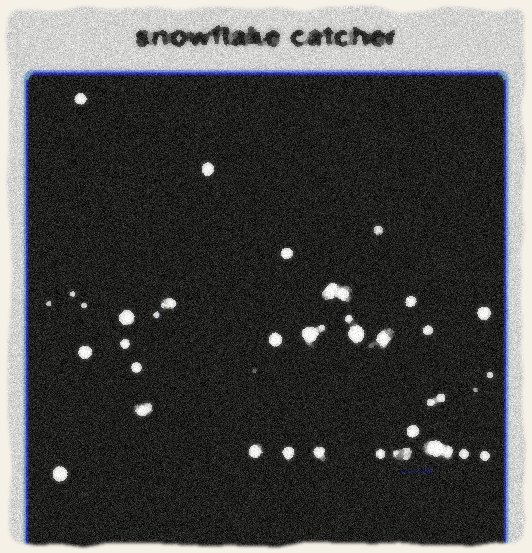
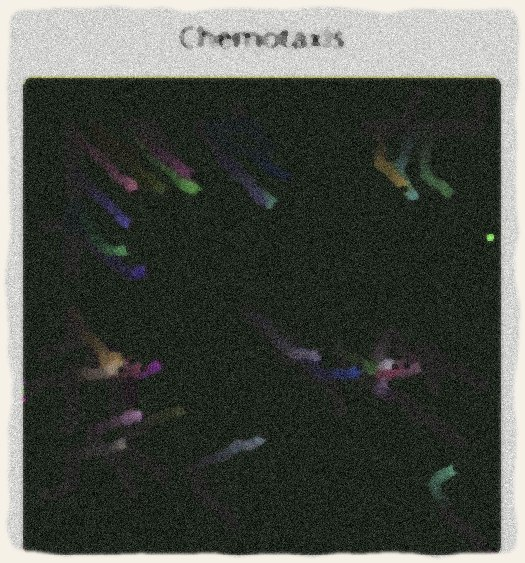

Archive · Java Miniatures
Java Miniatures
A cabinet of small games and simulations — sketches made while learning Java.
A collection of the small works I composed while learning Java: two playable games, a fireworks show, a snowfall, and a colony of hungry organisms.

Minesweeper
Java · game logic · playable in browser
The classic game, built from scratch: bombs are scattered at random across the field, and the player must uncover the board while marking the squares believed to hide them. The full source lives on my GitHub.
Play the game →
Asteroids
Java · arcade physics · playable in browser
The classic arcade game: pilot a spaceship through a drifting asteroid field, shooting the rocks apart and slipping into hyperspace to survive. The full source lives on my GitHub.
Play the game →Fireworks
Java · animation · color study
A fireworks show composed to practice object-oriented programming, letting color and animation carry the piece — a small celebration in code.

Snowflake Catcher
Java · drawing · interaction
A quiet little program in which the player catches the falling snow by drawing — an exercise in interaction at its simplest.

Chemotaxis
Java · simulation · emergent behavior
A simulation of organisms drifting toward food and consuming it — simple rules, gathered into a small living scene.